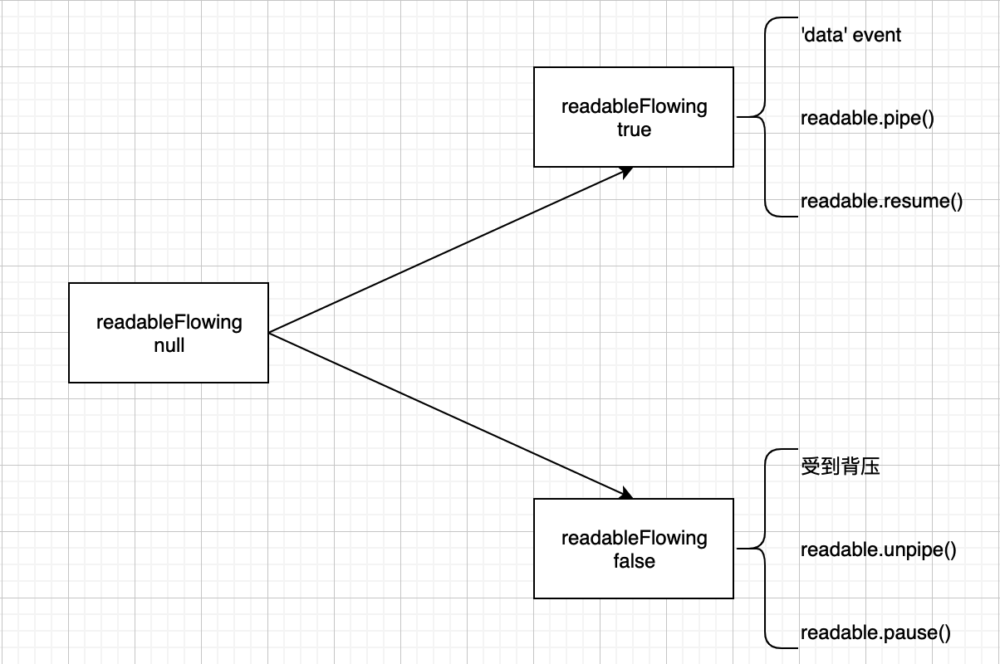
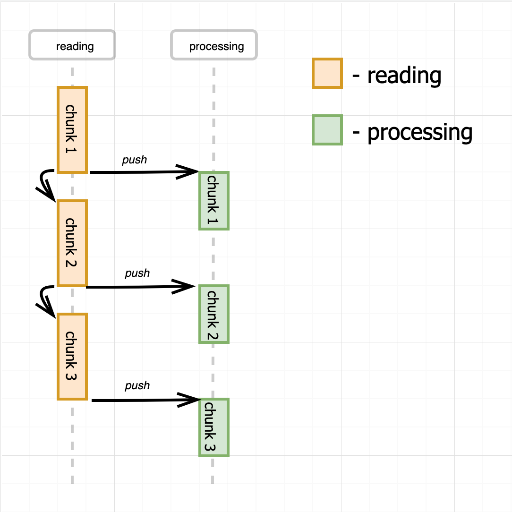
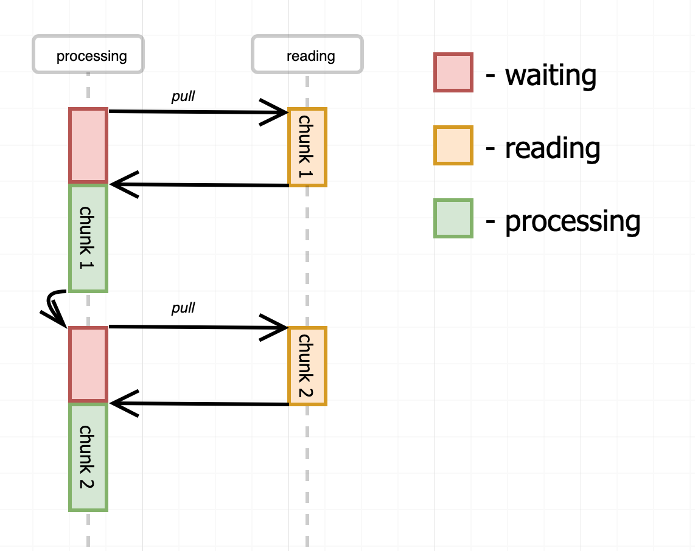
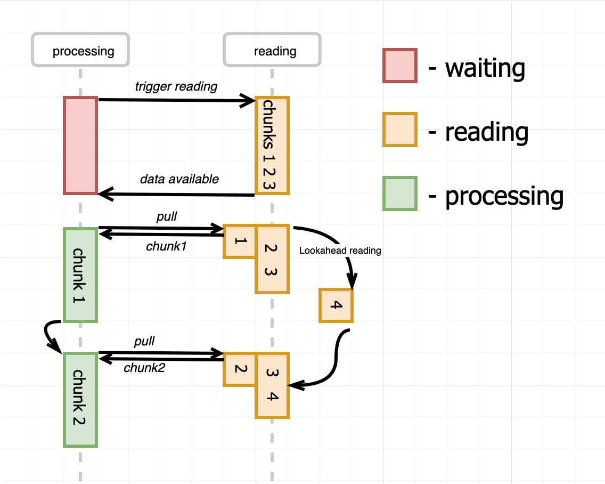

Readable stream - Node.js
可读流是对提供数据的来源的一种抽象（读取 I/O 数据）。
Node.js 的可读流在任意时刻，会处于以下三种状态之一：
1 | // 没有提供消费流数据的机制，流不会产生数据 |
这三种状态是对两种读取模式的抽象：
- 暂停 paused：通过调用
stream.read()来读取数据块。所有的可读流都从该模式开始。 - 流动 flowing：自动从底层系统读取数据，并通过事件将数据提供给应用程序。

push 模型
由 Readable stream 从文件中（异步逐块）读取数据块，读取后推送给处理程序，然后立即读取下一个数据块。

伪代码如下：
1 | class Reader extends EventEmitter { |
这种方式无法控制数据生成的速度。如果消费速度比生产速度慢，那就需要引入更多消费者（即扩大规模）以应对数据流。
提供更多消费者
假设读取一个数据块需要 3s，消费一个数据块需要 6s，那么在任何给定时间点，除了处理的开始和结束，我们都需要有 2 个并行的消费者。
也就是说如果消费比生产更快，那么只需要一个消费者；反之，就必须拥有比生产者更多的消费者。
使用缓冲
还有一种处理方式是在消费者的内存中缓冲未处理的数据块。
但是，这会导致无限的缓冲区增长和不受控制的内存使用，因此需要引入一些反压机制。
flowing mode
上述模型就是 Node.js 可读流的流动模式，可读流驱动读取，不断将读取的数据块（没有任何缓冲）推向 data 事件的侦听器。
flowing 模式只与以下 API 相关：
- 事件
data - 方法
pause() - 方法
resume()
pull 模型
如果该由消费者驱动消费者读取数据块（拉取），那么生产速度就不会超过消费速度：

伪代码如下：
1 | class Reader { |
这种方式消费的效率很低。从图中可以看出：
- 当从文件中读取数据块时，消费者都处于空闲状态
- 同样的，消费期间也没有读取操作
超前读取 & 内部缓冲
假设 reader 的容量为 buffer_capacity，每次读取的数据块的大小为 chunk_size，所以一共可以读取的 chunk 个数为 chunk_amount = buffer_capacity / chunk_size.
采用以下方式生产、消费数据：
- 第一次读取 chunk_amount 个数据块
- 消费者每次消费（拉取）（一个或多个）数据块时，生产者就生产对应数量的数据块

paused mode
这正是 Node.js 可读流的 paused 模式：
- 读取过程由消费者驱动（可读流是被动的）
- 使用内部缓冲区和超前读取提高效率
paused 模式与以下 API 相关：
- option
highWaterMark设置基础缓冲区的大小 - 事件
readable当有一些数据要读取或流结束时发生触发 - 方法
read()同步读取数据（readable事件触发的）